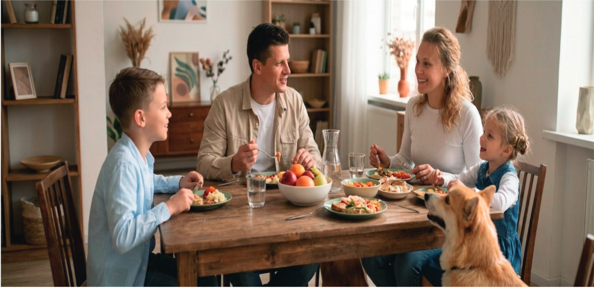

Organizimi i jetës në familje dhe në shoqëri
Situatë: Nëna ime është arkitekte në një kompani ndërtimi, ndërsa babai është avokat. Në shtëpi, ata çdoherë i organizojnë dhe i ndajnë punët. Në familjen tonë, tashmë është bërë traditë që të darkojmë së bashku. Babai përgatit ushqimin, ndërsa nëna e përgatit tryezën. Unë dhe vëllai u ndihmojmë, sepse prindërit çdoherë na thonë: “Ne duhet të gjithë të kontribuojmë për mirëqenien e familjes sonë dhe ta udhëheqim së bashku atë.”
Teksa po hanim sot, ne po diskutonim edhe për gjërat që do të blinim, sepse tashmë kishim vendosur që do ta ndërronim pamjen e dhomës së ndenjjes. Të gjithë i dhamë propozimet tona. Diskutuam derisa arritëm në një vendim të përbashkët.
